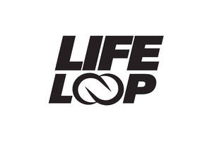

Trade Mark Journal No.2025/043 24 October 2025
UK00004279219 16 October 2025 (3,5,32)

- Class 3
- Perfumery and fragrances; room fragrances and household fragrances; cosmetics; body deodorants [perfumery]; personal care preparations; non-medicated facial cleansers; micellar water; exfoliating body scrubs; bath bombs; facial make-up; moisturisers [cosmetics]; soaps; skin care preparations; skin creams; face masks; beauty masks; body masks; skin cleansers [cosmetic]; sun-tanning preparations [cosmetics]; sunscreens [for cosmetic use]; hair styling preparations; hair care preparations; shampoos; conditioners; hair serums; heat protection sprays; lip cosmetics; lip tints; lip gloss; lip balms; shaving cream; shaving foam; nail cosmetics; nail tips; beauty lotions; hair dyes; aromatherapy oils and massage oils; bathing lotions; air-fragrance reed diffusers; refills for electric room fragrance dispensers; potpourris [fragrances]; cosmetic preparations for the care of mouth and teeth; dentifrices in the form of chewing gum; chewable tooth-cleaning preparations; tooth whitening pastes; mouthwash; non-medicated mouthwashes; breath-freshening sprays; cosmetic wipes; cleansing balms.
- Class 5
- Medicinal preparations in the form of creams, powders, oils, solutions, nasal drops or tablets; medicated after-shave lotions; deodorants for clothing; dietary and nutritional supplements; health-food supplements made principally of vitamins; herbal, probiotic, mineral and antioxidant supplements; dietary supplements promoting fitness and endurance; protein supplements; protein supplement shots; ready-to-drink protein shots; homeopathic supplements; preparations for supplementing the body with essential vitamins and micro-elements; vitamin supplement patches; vitamins and vitamin preparations; gummy vitamins; vitamin chewing gum; vitamin supplements in chewing-gum form; caffeine chewing gum; caffeine supplements in chewing-gum form; medicated chewing gum; caffeine preparations for stimulative use; medicated anti-cavity mouthwashes; herbal preparations for medicinal use; herbal teas for medicinal or therapeutic use and for the promotion of well-being; nutritional supplement energy bars; vitamin drinks; dietary supplement drinks; powdered nutritional supplement drink mixes; protein supplement shakes; massage candles for therapeutic purposes; massage gels for medical purposes; electrolyte replacement preparations; collagen peptide supplements; adaptogenic herbal supplements; gummies being dietary supplements; meal-replacement drinks adapted for medical use.
- Class 32
- Non-alcoholic drinks; vitamin-fortified non-alcoholic drinks; non-alcoholic drinks enriched with vitamins and mineral salts; juice drinks; isotonic non-alcoholic drinks; energy drinks containing caffeine; protein-fortified non-alcoholic drinks; functional water beverages; flavoured mineral waters; kombucha (non-alcoholic); syrups for making soft drinks; non-alcoholic cocktails; non-alcoholic carbonated drinks.
Alfred Franks & Bartlett Plc
Representative: Marks & Clerk LLP